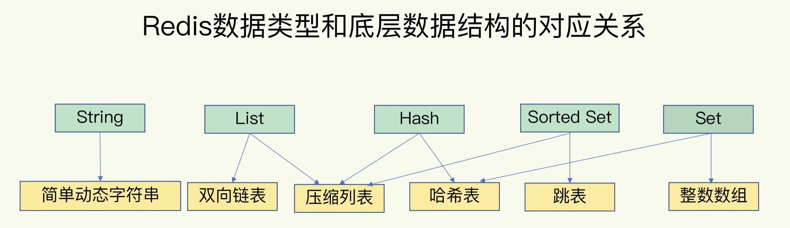
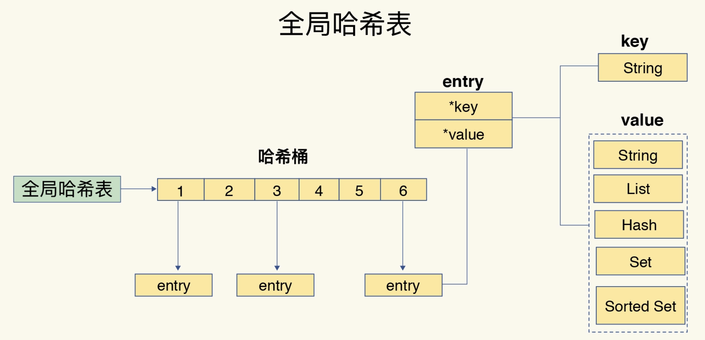
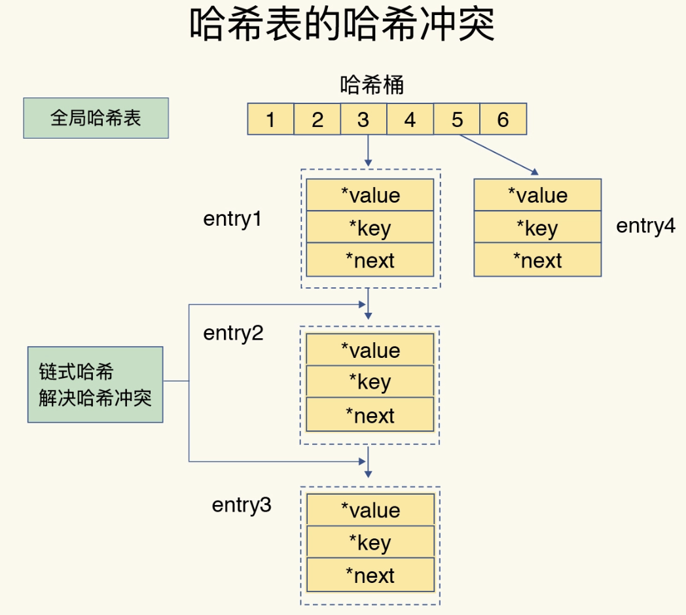

JK-Redis-有哪些慢操作
Redis 底层数据库结构
- 简单动态字符串
- 双向链表
- 压缩列表
- 哈希表
- 跳表
- 整数数组

Redis 中的键和值是如何组织的
Redis 使用了一个哈希表（ 全局哈希表 ）来保存所有键值对。哈希桶中的元素保存的并不是值本身，而是指向具体值的指针。如图所示，可以看到，哈希桶中的 entry 元素中保存了key和value指针，分别指向了实际的键和值。
这个全局是指 Redis 数据库中的所有 key 和 value ，是由一个哈希表来索引的。通过在这个哈希表中查询key，就可以找到对应的 value 。然后根据 value 的具体类型（例如Hash，Set，List等），再通过value的底层数据结构来读取具体的value数据，例如List通过双向链表来读取数据。

哈希表的冲突问题
Redis 解决哈希冲突的方式是链式哈希。

如果哈希表里写入的数据越来越多，哈希冲突可能也会越来越多，这就会导致某些哈希冲突链过长，进而导致这个链上的元素查找耗时长，效率降低。
解决冲突越来越多导致的性能问题就是对哈希表做 rehash 操作。 rehash 也就是增加现有的哈希桶数量，让逐渐增多的 entry 元素能在更多的桶之间分散保存，减少单个桶中的元素数量，从而减少单个桶中的冲突。具体做法是如下。
Rehash 操作过程：
Redis 默认使用了两个全局哈希表：哈希表 1 和哈希表 2。一开始，当你刚插入数据时，默认使用哈希表 1，此时的哈希表 2 并没有被分配空间。随着数据逐步增多，Redis 开始执行 rehash，这个过程分为三步：
- 给哈希表 2 分配更大的空间，例如是当前哈希表 1 大小的两倍；
- 把哈希表 1 中的数据重新映射并拷贝到哈希表 2 中；
- 释放哈希表 1 的空间。
到此，我们就可以从哈希表 1 切换到哈希表 2，用增大的哈希表 2 保存更多数据，而原来的哈希表 1 留作下一次 rehash 扩容备用。
rehash 可能带来的操作阻塞
第二步涉及大量的数据拷贝，如果一次性把哈希表 1 中的数据都迁移完，会造成 Redis 线程阻塞，无法服务其他请求。为了避免这个问题，Redis 采用了渐进式 rehash。
渐进式 rehash
在第二步拷贝数据时，Redis 仍然正常处理客户端请求，每处理一个请求时，从哈希表 1 中的第一个索引位置开始，顺带着将这个索引位置上的所有 entries 拷贝到哈希表 2 中；等处理下一个请求时，再顺带拷贝哈希表 1 中的下一个索引位置的 entries。如下图所示：

总之就是 把一次性大量拷贝的开销，分摊到了多次处理请求的过程中
压缩列表
压缩列表实际上类似于一个数组，数组中的每一个元素都对应保存一个数据。和数组不同的是，压缩列表在表头有三个字段 zlbytes、zltail 和 zllen，分别表示列表长度、列表尾的偏移量和列表中的 entry 个数；压缩列表在表尾还有一个 zlend，表示列表结束。

- 压缩列表是 Redis 为节约内存自己设计的一种顺序型数据结构。顺序存储的好处是可以提高 CPU 缓存的利用率和命中率。
- 应用场景
- 当一个列表只包含少量列表项,并且每个列表项要么就是小整数值,要么就是长度比较短的字符串,那么 Redis 就会使用压缩列表来做列表的底层实现；
- 当一个哈希只包含少量键值对,比且每个键值对的键和值要么就是小整数值,要么就是长度比较短的字符串,那么Redis就会使用压缩列表来做哈希的底层实现。
- 压缩列表被用作列表键和哈希键的底层实现之一。
- 压缩列表中每个节点的格式： previous_entry_length 、 encoding 、 content
encoding 表示了 content 的编码格式（要么是小整数、要么是较短字符串，右 encoding 的前两位表示）。 previous_entry_length 是前一个 entry 节点的长度。 content 存储节点内容。 - 添加新节点到压缩列表,或者从压缩列表中删除节点,可能会引发连锁更新操作,但这种操作出现的几率并不高。
主要是解决 有序链表 查找时只能顺序查找的问题。跳表通过增加 多级索引 的方式，实现元素快速定位的目的。可以做到类似二分查找（ log(n) ）的性能。

不同操作的复杂度
第一，单元素操作，是指每一种集合类型对单个数据实现的增删改查操作。例如，Hash 类型的 HGET、HSET 和 HDEL，Set 类型的 SADD、SREM、SRANDMEMBER 等。这些操作的复杂度由集合采用的数据结构决定，例如，HGET、HSET 和 HDEL 是对哈希表做操作，所以它们的复杂度都是 O(1)；Set 类型用哈希表作为底层数据结构时，它的 SADD、SREM、SRANDMEMBER 复杂度也是 O(1)。这里，有个地方你需要注意一下，集合类型支持同时对多个元素进行增删改查，例如 Hash 类型的 HMGET 和 HMSET，Set 类型的 SADD 也支持同时增加多个元素。此时，这些操作的复杂度，就是由单个元素操作复杂度和元素个数决定的。例如，HMSET 增加 M 个元素时，复杂度就从 O(1) 变成 O(M) 了。
第二，范围操作，是指集合类型中的遍历操作，可以返回集合中的所有数据，比如 Hash 类型的 HGETALL 和 Set 类型的 SMEMBERS，或者返回一个范围内的部分数据，比如 List 类型的 LRANGE 和 ZSet 类型的 ZRANGE。这类操作的复杂度一般是 O(N)，比较耗时，我们应该尽量避免。不过，Redis 从 2.8 版本开始提供了 SCAN 系列操作（包括 HSCAN，SSCAN 和 ZSCAN），这类操作实现了渐进式遍历，每次只返回有限数量的数据。这样一来，相比于 HGETALL、SMEMBERS 这类操作来说，就避免了一次性返回所有元素而导致的 Redis 阻塞。
第三，统计操作，是指集合类型对集合中所有元素个数的记录，例如 LLEN 和 SCARD。这类操作复杂度只有 O(1)，这是因为当集合类型采用压缩列表、双向链表、整数数组这些数据结构时，这些结构中专门记录了元素的个数统计，因此可以高效地完成相关操作。
第四，例外情况，是指某些数据结构的特殊记录，例如压缩列表和双向链表都会记录表头和表尾的偏移量。这样一来，对于 List 类型的 LPOP、RPOP、LPUSH、RPUSH 这四个操作来说，它们是在列表的头尾增删元素，这就可以通过偏移量直接定位，所以它们的复杂度也只有 O(1)，可以实现快速操作。
要根据实际的应用场景，选取对应的数据结构，才能达到良好的效率。
整数数组和压缩列表在查找时间复杂度方面并没有很大的优势，那为什么 Redis 还会把它们作为底层数据结构呢？
两方面原因：
1、内存利用率，数组和压缩列表都是非常紧凑的数据结构，它比链表占用的内存要更少。Redis是内存数据库，大量数据存到内存中，此时需要做尽可能的优化，提高内存的利用率，也能避免一些内存碎片
2、数组对CPU高速缓存支持更友好，所以Redis在设计时，集合数据元素较少情况下，默认采用内存紧凑排列的方式存储，同时利用CPU高速缓存不会降低访问速度。当数据元素超过设定阈值后，避免查询时间复杂度太高，转为哈希和跳表数据结构存储，保证查询效率。